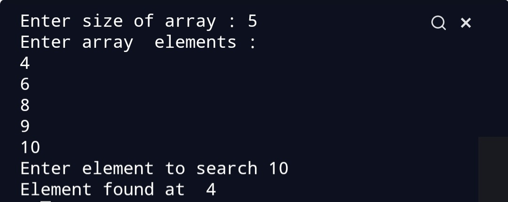

Script Name
Binary Search Algorithm.
Aim
To write a program for Binary search.
Purpose
To get a understanding about binary search.
Short description of package/script
- It is a python program of binary search Algorithm.
- It is written in a way that it takes user input.
Workflow of the Project
- First a function is written to perform Bubble sort.
- Then outside the function user input is taken.
Detailed explanation of script, if needed
Binary search is another searching algorithm which is more effective than
the linear Search. Searching algorithms are used to search a desired
element in an array.Binary Search does less number of comparisons than
linear Search,so it is an effective algorithm.Binary Search works only on
sorted array. It follows divide and conquer approach.
Algorithm
- The array should be sorted.
-
We take 3 variables start,mid and end. Start variables has the index of
0th element end variable has index of last element and mid points to
middle element.
- We run a loop until start<=end.
- We check if our desired element is equal to mid element.
- If yes then return mid.
-
If desired element is greater than the mid element then we search in the
right array.
-
If desired element is less than the mid element then we search in the
left array.
- Else return -1.
Examples
For example let the array be [4,5,8,9,11]
We have to search 9 in the array.
Here, start =0,end=4 and mid=(start+end)/2,mid=2
a[mid]=8 which is not equal to 9
a[mid]<9 hence, start=mid+1
start=3,end=4,mid=(3+4)/2=3
a[mid]=9 which is equal to 9 so we return 3.
Output

Author(s)
Siddhi Bhanushali